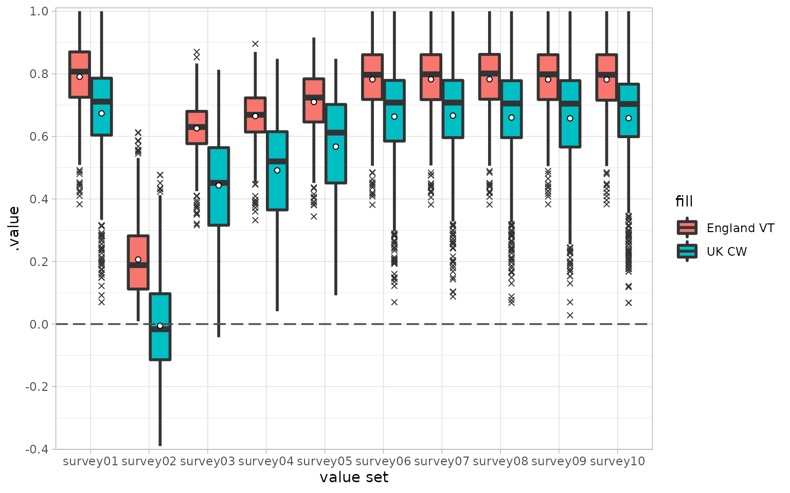
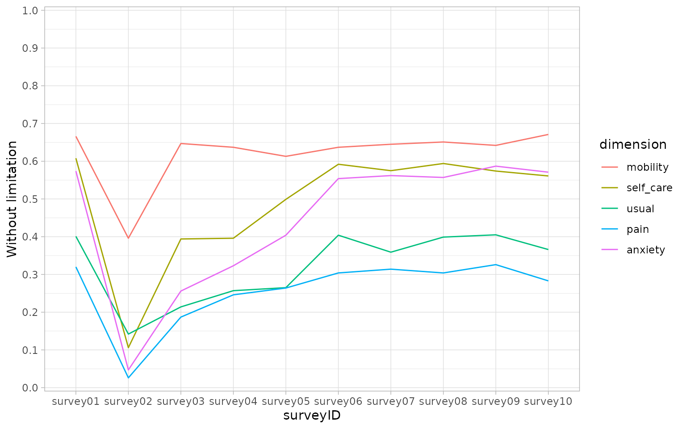

surveyTools provides a simple and intuitive user interface for the analysis of EQ-5D surveys. It builds upon the eq5d package to facilitate the calculation of QALY values and other related metrics across multiple surveys.
The package provides a range of functions:
- Constructors (and validators) for EQ5D data frame subclasses (EQ5D3L, EQ5D5L and EQ5D):
new_eq5d3l()(validate_eq5d3l()),new_eq5d5l()(validate_eq5d5l()) andnew_eq5dy()(validate_eq5dy()). - User-friendly coercion functions
as_eq5d3l(),as_eq5d5l()andas_eq5dy(). - The calculation of utility values based on a range of different value sets. This functionality is provided via the
calculate_utility(),add_utility()andavailable_valuesets()functions which are wrappers around the eq5d package. - The calculation of different Quality of Life Years (QALY) metrics including unadjusted ‘raw’ values, and the disutility from both perfect health and, optionally, a specified baseline. See
calculate_qalys(). - The calculation of the Paretian Classification of Health Change (PCHC) in an individual’s health state between two surveys via
calculate_pchc()(again wrapping the eq5d package). - Easy calculation of responses with a health limitation (i.e. a non-one response in one of the dimensions) via
calculate_limitation().
The EQ5D object class
We define an EQ5D object as a table containing data in long format that meets the following criteria:
It contains columns that represent dimensions from the EQ5D survey specification as well as a column representing the Visual Analogue Score (columns ‘mobility’, ‘self_care’, ‘usual’, ‘pain’, ‘anxiety’ and ‘vas’ in the example table below)
Dimension values must be whole numbers, bounded between 1 and 3 for EQ5D3L and EQ5D3Y surveys or bounded between 1 and 5 for EQ5D5L surveys
It contains a column that acts as a unique respondent identifier (
respondentID) and another that identifying different surveys over time (`surveyID). Together these should uniquely identify a response (i.e. no combination of these should be duplicated within the given data frame).It contains a column that provides the relative time (e.g. days/weeks) of a response within the survey framework (‘time_index’).
In surveyTools we implement these objects as a data frame subclass and provide functionality to coerce input to this representation via functions as_eq5d3l(), as_eq5d5l() and as_eq5dy().
| surveyID | respondentID | time_index | mobility | self_care | usual | pain | anxiety | vas | sex | age |
|---|---|---|---|---|---|---|---|---|---|---|
| . | . | . | . | . | . | . | . | . | . | . |
| 1 | 1 | 30 | 3 | 2 | 2 | 1 | 1 | 87 | Female | 25 |
| 1 | 2 | 30 | 2 | 2 | 2 | 2 | 2 | 65 | Male | 30 |
| 1 | 3 | 30 | 1 | 3 | 3 | 1 | 3 | 76 | Male | 39 |
| 1 | 4 | 30 | 1 | 2 | 3 | 2 | 4 | 55 | Female | 60 |
| 1 | 5 | 30 | 2 | 1 | 4 | 1 | 1 | 80 | Male | 28 |
| 1 | 6 | 30 | 1 | 3 | 2 | 1 | 1 | 83 | Male | 59 |
| . | . | . | . | . | . | . | . | . | . | . |
Usage
library(surveyTools)
library(ggplot2)
# Example EQ5D5L data
data("EQ5D5L_surveys")
str(EQ5D5L_surveys)
#> Classes 'tbl' and 'data.frame': 10000 obs. of 12 variables:
#> $ surveyID : chr "survey01" "survey02" "survey03" "survey04" ...
#> $ respondentID: int 1 1 1 1 1 1 1 1 1 1 ...
#> $ sex : chr "Female" "Female" "Female" "Female" ...
#> $ age : int 25 25 25 25 25 25 25 25 25 25 ...
#> $ mobility : int 2 1 1 1 1 2 2 1 1 2 ...
#> $ self_care : int 1 4 5 2 2 1 1 1 3 1 ...
#> $ usual : int 2 5 2 5 3 1 2 2 2 2 ...
#> $ pain : int 1 5 1 2 3 2 1 2 1 1 ...
#> $ anxiety : int 1 3 3 2 1 1 1 1 1 1 ...
#> $ time_index : num 30 60 90 120 150 180 210 240 270 300 ...
#> $ vas : num 96 22 61 65 78 88 85 95 94 87 ...
#> $ dummy : logi TRUE FALSE TRUE TRUE FALSE TRUE ...Before coercing our data to an EQ5D5L object we must ensure that our surveys have an explicit ordering. We do this by converting the surveyID variable to an ordered factor prior to call as_eq5d5l().
dat <- EQ5D5L_surveys
dat$surveyID <- as.factor(dat$surveyID)
dat <- as_eq5d5l(
dat,
mobility = "mobility",
self_care = "self_care",
usual = "usual",
pain = "pain",
anxiety = "anxiety",
respondentID = "respondentID",
surveyID = "surveyID",
vas = "vas",
time_index = "time_index"
)
dat
#> # EQ-5D-5L: 10,000 x 12
#> surveyID respondentID sex age mobility self_care usual pain anxiety
#> * <fct> <int> <chr> <int> <int> <int> <int> <int> <int>
#> 1 survey01 1 Female 25 2 1 2 1 1
#> 2 survey02 1 Female 25 1 4 5 5 3
#> 3 survey03 1 Female 25 1 5 2 1 3
#> 4 survey04 1 Female 25 1 2 5 2 2
#> 5 survey05 1 Female 25 1 2 3 3 1
#> 6 survey06 1 Female 25 2 1 1 2 1
#> 7 survey07 1 Female 25 2 1 2 1 1
#> 8 survey08 1 Female 25 1 1 2 2 1
#> 9 survey09 1 Female 25 1 3 2 1 1
#> 10 survey10 1 Female 25 2 1 2 1 1
#> # … with 9,990 more rows, and 3 more variables: time_index <dbl>, vas <dbl>,
#> # dummy <lgl>To obtain a quick overview of the data we can call summary(). By default this returns the output as a list of data frames, showing frequency counts and proportions, split by surveyID
head(summary(dat), n = 2)
#> $survey01
#> # A data frame: 6 × 6
#> value mobility self_care usual pain anxiety
#> <dbl> <dbl> <dbl> <dbl> <dbl> <dbl>
#> 1 1 666 608 401 320 574
#> 2 2 196 131 303 359 235
#> 3 3 114 205 166 287 150
#> 4 4 19 18 61 24 29
#> 5 5 5 38 69 10 12
#> 6 NA 0 0 0 0 0
#>
#> $survey02
#> # A data frame: 6 × 6
#> value mobility self_care usual pain anxiety
#> <dbl> <dbl> <dbl> <dbl> <dbl> <dbl>
#> 1 1 396 106 142 26 47
#> 2 2 248 169 177 71 92
#> 3 3 194 214 160 93 103
#> 4 4 83 277 237 364 381
#> 5 5 79 234 284 446 377
#> 6 NA 0 0 0 0 0Alternatively we can set the parameter tidy to TRUE and obtain the summary data in a “tidy” (long) format.
summary(dat, tidy = TRUE)
#> # A data frame: 300 × 4
#> surveyID dimension value count
#> <chr> <fct> <dbl> <dbl>
#> 1 survey01 mobility 1 666
#> 2 survey01 mobility 2 196
#> 3 survey01 mobility 3 114
#> 4 survey01 mobility 4 19
#> 5 survey01 mobility 5 5
#> 6 survey01 mobility NA 0
#> 7 survey01 self_care 1 608
#> 8 survey01 self_care 2 131
#> 9 survey01 self_care 3 205
#> 10 survey01 self_care 4 18
#> # … with 290 more rowsIf we try and coerce an object that does not meet the required criteria, the function will error with an informative message.
# Incorrect bounds for dimension values will cause an error
as_eq5d3l(
EQ5D5L_surveys,
mobility = "mobility",
self_care = "self_care",
usual = "usual",
pain = "pain",
anxiety = "anxiety",
respondentID = "respondentID",
surveyID = "surveyID",
vas = "vas",
time_index = "time_index"
)
#> Error in `validate_eq5d()`:
#> ! Dimensions must be either bounded by 1 and 3, or NA
# Dimension values that are not whole numbers will cause an error
EQ5D5L_surveys[1,5] <- 1.5
as_eq5d5l(
EQ5D5L_surveys,
mobility = "mobility",
self_care = "self_care",
usual = "usual",
pain = "pain",
anxiety = "anxiety",
respondentID = "respondentID",
surveyID = "surveyID",
vas = "vas",
time_index = "time_index"
)
#> Error in `validate_eq5d()`:
#> ! Dimension values must be whole numbers or NAAvailable value sets
Once we have created our EQ5D objects we can think about which value sets we would to use for the calculation of utility values and subsequent QALY metrics. We can obtain a list of compatible value sets (across countries and type) by passing our EQ5D object directly to the available_valuesets() function or by passing a comparable string.
For EQ5D3L inputs the type can be:
“TTO”, the time trade-off valuation technique;
“VAS”, the visual analogue scale valuation technique;
“RCW”, a reverse crosswalk conversion to EQ5D5L values; or
“DSU”, the NICE Decision Support Unit’s model that allows mappings on to EQ5D5L values accounting for both age and sex.
For EQ5D5L inputs this can be:
“VT”, value sets generated via a EuroQol standardised valuation study protocol;
“CW”, a crosswalk conversion EQ5D3L values; or
“DSU”, the NICE Decision Support Unit’s model that allows mappings on to EQ5D5L values accounting for both age and sex.
Note that this function is purely a convenience wrapper around the eq5d::valuesets() function. It will return a data frame with columns representing the EQ5D version, the value set country and the value set type.
vs <- available_valuesets(dat)
head(vs, 10)
#> # A data frame: 10 × 3
#> Version Type Country
#> * <chr> <chr> <chr>
#> 1 EQ-5D-5L VT Belgium
#> 2 EQ-5D-5L VT Canada
#> 3 EQ-5D-5L VT China
#> 4 EQ-5D-5L VT Denmark
#> 5 EQ-5D-5L VT Egypt
#> 6 EQ-5D-5L VT England
#> 7 EQ-5D-5L VT Ethiopia
#> 8 EQ-5D-5L VT France
#> 9 EQ-5D-5L VT Germany
#> 10 EQ-5D-5L VT HongKong
identical(vs, available_valuesets("eq5d5l"))
#> [1] TRUE
identical(vs, available_valuesets("EQ5D5L"))
#> [1] TRUE
identical(vs, available_valuesets("EQ-5D-5L"))
#> [1] TRUEFor further details about the available value sets please consult the documentation of the wrapped package via vignette(topic = "eq5d", package = "eq5d").
Calculating utility values
To calculate the utility values we call calculate_utility on our EQ5D object with additional arguments specifying the countries and type we are interested in. Note that the function will error if the type and country arguments are of different length, with an exception made for inputs of length one that will be recycled to the necessary length.
# Example 1
vs_dat <- vs[vs$Country %in% c("England", "Ireland", "Germany", "UK", "USA"),]
vs_dat <- vs_dat[vs_dat$Type %in% c("VT", "CW"),]
calculate_utility(dat, type = vs_dat$Type, country = vs_dat$Country)
#> # A data frame: 70,000 × 5
#> respondentID surveyID .utility_country .utility_type .value
#> * <int> <fct> <chr> <chr> <dbl>
#> 1 1 survey01 England VT 0.892
#> 2 1 survey02 England VT 0.213
#> 3 1 survey03 England VT 0.643
#> 4 1 survey04 England VT 0.625
#> 5 1 survey05 England VT 0.803
#> 6 1 survey06 England VT 0.879
#> 7 1 survey07 England VT 0.892
#> 8 1 survey08 England VT 0.887
#> 9 1 survey09 England VT 0.87
#> 10 1 survey10 England VT 0.892
#> # … with 69,990 more rows
# Example 2 - cross walk comparison
vs_dat <- vs_dat[vs_dat$Country %in% c("England", "UK"),]
util <- calculate_utility(dat, type = vs_dat$Type, country = vs_dat$Country)
# plot the results
util$fill <- paste(util$.utility_country, util$.utility_type)
ggplot(util, aes(x = surveyID, y = .value, fill = fill)) +
geom_boxplot(lwd = 1, outlier.shape = 4) +
stat_summary(
mapping = aes(group = .utility_country),
fun = mean,
geom = "point",
position = position_dodge(width = 0.75),
shape = 21,
color = "black",
fill = "white"
) +
theme_light() +
geom_hline(yintercept = 0, linetype = "longdash", size = 0.6, color = "grey30") +
scale_y_continuous(n.breaks = 10, expand = c(0.005, 0.005)) +
scale_x_discrete(name = "value set")
QALY calculations
Quality of life years can be calculated directly from utility values. By default, two different metrics are provided. Firstly, a “raw” value which is simply the scaled area under the utility curve and, secondly, a value which represents the loss from full health.
qalys <-
dat |>
add_utility(type = "VT", country = c("Denmark", "France")) |>
calculate_qalys(time_index = "time_index")
subset(qalys, .qaly=="raw")
#> # A data frame: 2,000 × 5
#> respondentID .utility_type .utility_country .qaly .value
#> * <int> <chr> <chr> <chr> <dbl>
#> 1 1 VT Denmark raw 0.544
#> 2 1 VT France raw 0.573
#> 3 2 VT Denmark raw 0.487
#> 4 2 VT France raw 0.503
#> 5 3 VT Denmark raw 0.530
#> 6 3 VT France raw 0.577
#> 7 4 VT Denmark raw 0.276
#> 8 4 VT France raw 0.430
#> 9 5 VT Denmark raw 0.506
#> 10 5 VT France raw 0.575
#> # … with 1,990 more rows
subset(qalys, .qaly=="loss_vs_fullhealth")
#> # A data frame: 2,000 × 5
#> respondentID .utility_type .utility_country .qaly .value
#> * <int> <chr> <chr> <chr> <dbl>
#> 1 1 VT Denmark loss_vs_fullhealth 0.195
#> 2 1 VT France loss_vs_fullhealth 0.166
#> 3 2 VT Denmark loss_vs_fullhealth 0.252
#> 4 2 VT France loss_vs_fullhealth 0.237
#> 5 3 VT Denmark loss_vs_fullhealth 0.210
#> 6 3 VT France loss_vs_fullhealth 0.162
#> 7 4 VT Denmark loss_vs_fullhealth 0.463
#> 8 4 VT France loss_vs_fullhealth 0.310
#> 9 5 VT Denmark loss_vs_fullhealth 0.233
#> 10 5 VT France loss_vs_fullhealth 0.164
#> # … with 1,990 more rowsComparison to a baseline
calculate_qalys() also allows us to calculate the loss from a specified baseline in one of two ways. Firstly, a character string baseline_survey argument can be placed which matches a survey present in the utility data. If the argument is passed as such then the utility values from the specified survey are used to calculate the loss. Note that the survey is still included in the raw, unadjusted calculation, prior to the calculation of loss.
# Reload the example data and combine with some baseline measurements
data("EQ5D5L_surveys")
dat <-
EQ5D5L_surveys |>
transform(surveyID = as.factor(surveyID)) |>
as_eq5d5l(
mobility = "mobility",
self_care = "self_care",
usual = "usual",
pain = "pain",
anxiety = "anxiety",
respondentID = "respondentID",
surveyID = "surveyID",
vas = "vas"
)
add_utility(dat, type = "VT", country = c("Denmark", "France")) |>
calculate_qalys(baseline_survey = "survey01", time_index = "time_index") |>
subset(.qaly == "loss_vs_baseline")
#> # A data frame: 2,000 × 5
#> respondentID .utility_country .utility_type .qaly .value
#> * <int> <chr> <chr> <chr> <dbl>
#> 1 1 Denmark VT loss_vs_baseline 0.141
#> 2 1 France VT loss_vs_baseline 0.114
#> 3 2 Denmark VT loss_vs_baseline 0.0892
#> 4 2 France VT loss_vs_baseline -0.00370
#> 5 3 Denmark VT loss_vs_baseline 0.0965
#> 6 3 France VT loss_vs_baseline 0.106
#> 7 4 Denmark VT loss_vs_baseline 0.175
#> 8 4 France VT loss_vs_baseline 0.0450
#> 9 5 Denmark VT loss_vs_baseline 0.142
#> 10 5 France VT loss_vs_baseline 0.0915
#> # … with 1,990 more rowsAlternatively the baseline_survey argument can be specified as a data frame with a column corresponding to the respondentID and another representing the associated utility. Optionally columns corresponding to the utility country and utility type can be included to allow more granular comparisons. Note that for this specification of baseline, it is not included in the unadjusted, raw, calculation.
split_dat <- split(dat, dat$surveyID=="survey01")
surveys <- split_dat[[1]]
baseline <- split_dat[[2]]
utility_dat <- add_utility(
surveys,
type = "VT",
country = c("Denmark", "France")
)
baseline_utility <-
baseline |>
add_utility(type = "VT", country = c("Denmark", "France")) |>
subset(select=c(respondentID,.utility_country,.utility_type,.value))
calculate_qalys(utility_dat, baseline_survey = baseline_utility, time_index = "time_index") |>
subset(.qaly == "loss_vs_baseline")
#> # A data frame: 2,000 × 5
#> respondentID .utility_country .utility_type .qaly .value
#> * <int> <chr> <chr> <chr> <dbl>
#> 1 1 Denmark VT loss_vs_baseline 0.101
#> 2 1 France VT loss_vs_baseline 0.0796
#> 3 2 Denmark VT loss_vs_baseline 0.0556
#> 4 2 France VT loss_vs_baseline -0.0341
#> 5 3 Denmark VT loss_vs_baseline 0.0672
#> 6 3 France VT loss_vs_baseline 0.0788
#> 7 4 Denmark VT loss_vs_baseline 0.145
#> 8 4 France VT loss_vs_baseline 0.0182
#> 9 5 Denmark VT loss_vs_baseline 0.0959
#> 10 5 France VT loss_vs_baseline 0.0553
#> # … with 1,990 more rowsCalculate limitations
(limitation <- calculate_limitation(dat))
#> # A data frame: 50 × 3
#> surveyID dimension without_limitation
#> <fct> <fct> <dbl>
#> 1 survey01 mobility 0.666
#> 2 survey02 mobility 0.396
#> 3 survey03 mobility 0.647
#> 4 survey04 mobility 0.637
#> 5 survey05 mobility 0.613
#> 6 survey06 mobility 0.637
#> 7 survey07 mobility 0.645
#> 8 survey08 mobility 0.651
#> 9 survey09 mobility 0.642
#> 10 survey10 mobility 0.671
#> # … with 40 more rows
ggplot(limitation, aes(x = surveyID, y = without_limitation, group = dimension)) +
geom_line(aes(colour = dimension)) +
theme_light() +
scale_y_continuous(n.breaks = 10, expand = c(0.005, 0.005), limits = c(0, 1)) +
scale_x_discrete() +
scale_fill_discrete(name = "dimension") +
ylab("Without limitation")
Paretian Classification of Health Change (PCHC)
data("eq5d3l_example")
dat <- as_eq5d3l(
eq5d3l_example,
respondentID = "respondentID",
surveyID = "surveyID",
time_index = "time",
mobility = "MO",
self_care = "SC",
usual = "UA",
pain = "PD",
anxiety = "AD",
vas = "vas",
drop = FALSE # ensure we do not drop additional columns
)
grp1 <- subset(dat, Group == "Group1")
grp2 <- subset(dat, Group == "Group2")
calculate_pchc(grp1, grp2)
#> # A data frame: 5 × 3
#> Change Number Percent
#> <chr> <dbl> <dbl>
#> 1 No change 14 14
#> 2 Improve 59 59
#> 3 Worsen 14 14
#> 4 Mixed change 13 13
#> 5 No problems 0 0
calculate_pchc(grp1, grp2, by.dimension = TRUE)
#> # A data frame: 20 × 4
#> .Dimension Change Number Percent
#> <chr> <chr> <dbl> <dbl>
#> 1 MO No change 31 31
#> 2 MO Improve 26 26
#> 3 MO Worsen 7 7
#> 4 MO No problems 36 36
#> 5 SC No change 21 21
#> 6 SC Improve 31 31
#> 7 SC Worsen 7 7
#> 8 SC No problems 41 41
#> 9 UA No change 33 33
#> 10 UA Improve 43 43
#> 11 UA Worsen 6 6
#> 12 UA No problems 18 18
#> 13 PD No change 59 59
#> 14 PD Improve 34 34
#> 15 PD Worsen 3 3
#> 16 PD No problems 4 4
#> 17 AD No change 14 14
#> 18 AD Improve 22 22
#> 19 AD Worsen 12 12
#> 20 AD No problems 52 52